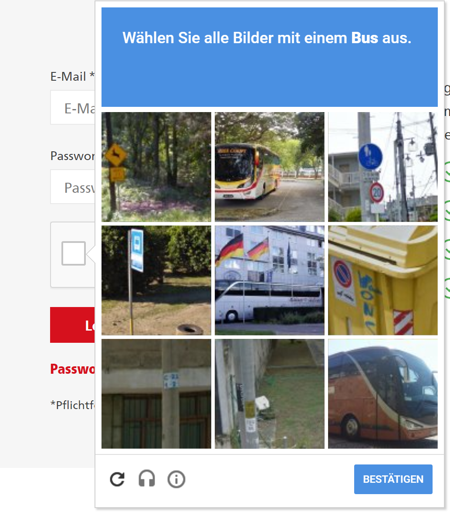

Können Maschinen denken?
Teil 1
Was ist Intelligenz?
Wie definiert ihr eine intelligente Maschine?
Was kann ein Kriterium sein, ob eine Maschine denken kann?
Beispiel Definition: Eine Maschine, die eine gerechte Gerichtsverhandlung führen kann
Diskutiert in Gruppen und einigt euch auf eine gemeinsame Definition
10 Minuten Zeit, dann Ergebnisse sammeln
Ergebnisse
- Team 1:
- Team 2:
- Team 3:
- Team 4:
Oder: Maschine kann einen Menschen zu einem gesellschaftsfähigen Menschen erziehen
Oder: Ein System, das jedes Datumsformat versteht

https://twitter.com/brookLYNevery1/status/954368989181902848?s=03
Oder: Ein selbstfahrendes Fahrzeug
Ist ein Schachprogramm intelligent?
Hier reicht stumpfes durchrechnen, um jeden Menschen zu besiegen
Das hat nichts mit dem zu tun, was Menschen machen
Aber vom Ergebnis ist die Maschine nicht als solche zu erkennen
Reicht das?
Schwache KI (künstliche Intelligenz)
Hypothese: es kommt darauf an, ob man das Ergebnis von dem eines Menschen unterscheiden kann
So ist auch der Turing Test definiert
Nach den Forderungen der schwachen KI wäre ein Schachprogramm intelligent, obwohl das was es tut relativ stumpf ist
und (sehr wahrscheinlich) nicht dem ähnelt was wir Menschen tun
Schachprogramme haben Menschen überwunden weil

Cray X-MP
Supercomputer (1982)

Titan 5 im Gamer PC (2017)
Neuerdings haben wir allerdings auch
- Schlauere Strategien (Programme)
- Sehr große Datenmengen
Starke KI
Hypothese: Maschinen sind nur dann intelligent, wenn sie etwas ähnliches macht wie ein Mensch
Was ist Stand der Kunst?
Maschinelles Lernen
Wie zeigen der Maschine viele Beispiele und die Maschine abstrahiert das Gemeinsame heraus
Fast alle Fortschritte der letzten Jahre beruhen auf diesem Konzept
Vieles basiert auf künstlichen Neuronalen Netzwerken
Hier sind wir nahe an dem was Menschen tun
Wie funktioniert moderne KI: Machine Learning als ein Experiment

Teil 2
Wissenschaftsjahr 2018 – Arbeitswelten der Zukunft
Wie ändert KI unser Berufsleben?

Die Zukunft ist bereits da, nur noch gleichmäßig verteilt
Wo haben KI Systeme Domänen besetzt, die bisher dem Menschen vorenthalten waren?
Die Post testet 2018 selbstfahrende Lieferfahrzeuge
"Sie werden in der Lage sein, dem Zusteller autonom zu folgen - sodass er nicht vor jedem Hauseingang aus- und wieder einsteigen und wenige Meter fahren muss."

http://www.spiegel.de/auto/aktuell/post-testet-selbstfahrende-streetscooter-a-1172300.html
Maschinen verstehen Sprache und können sich dazu verhalten

Gekritzelte Zeichnungen können erraten werden

Können Captchas noch Menschen von Maschinen unterscheiden?


Alle diese Captchas können von Standard-KI erkannt werden
Ich bin nicht sicher, ob ich alle richtig erkennen kann
Go
Go kann nicht wie Schach gelöst werden, weil der Suchraum zu groß ist
Seit 2016 Jahr hat AlphaGo jeden menschlichen Gegner (inkl. 1 und 2 der Weltrangliste geschlagen)
AlphaGo (Zero) hat gegen sich selbst gespielt und dabei erlernt, wie man gewinnt
Im Blindversuch konnten Menschen AlphaGo nicht von Menschen unterscheiden
Ist das intelligent?
Gesichtserkennung

Werden auch Models arbeitlos?
Nur zwei dieser Bilder sind echte Fotos

https://twitter.com/goodfellow_ian/status/918900712901197824
Die anderen sind mit Neuronalen Netzwerken generiert

Weitere Anwendungsgebiete
- Übersetzungen: Automatische Übersetzungen (z.B. bei Webseiten) durchaus brauchbar
- Medizin: Viele KI Systeme können mit menschlichen Ärzten mithalten (z.B. Hautkrebs Screening per Handy)
- Recommendation Systems: Spotify und Netflix kennen mich besser als ich mich selbst
- Predictive Maintenance: KI systems sagen wann man ein Wasserrohr ersetzen soll bevor es bricht
Aber
Was ist das?

Kein Standard System erkennt eine solche Abweichung von der Norm
Wir Menschen haben damit aber kein Problem
Maschinen können momentan nur reproduzieren

Und obwohl bereits viele Jobs weggefallen sind

Abschließende Fishbowl-Diskussion
Welche Rolle soll KI in unserer Gestellschaft spielen?
Machine Learning wird Jobs zerstören: Welche wollen wir bewusst erhalten?
Selbstfahrende Autos können vielleicht jedes Jahr 4000 Verkehrstote verhinden, aber wollen wir dadurch 1 Million Jobs verlieren?
Welche neuen Jobs wird es durch KI geben?
Bonus
Wenn eine Maschine töten muss
Was passiert in Situation in denen ein tötlicher Unfall nicht zu vermeiden ist?
Wen soll ein selbstfahrendes Fahrzeug opfern?
Ethik-Kommission zum autonomen Fahren lehnt eine Abwägung zum Wert von Menschen ab ( http://www.taz.de/Autonomes-Fahren-und-seine-Hindernisse/!5470265/)
Aber würdet ihr ein Auto fahren, dass euch selbst opfern würde? Halten Hersteller das ein?
Moral Machine
Muss man wieder Kant lesen? https://de.wikipedia.org/wiki/Kritik_der_praktischen_Vernunft